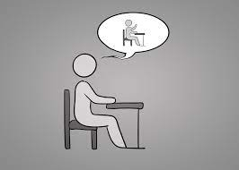

Introverts vs Extroverts
It’s your day off, what are you doing?
Hanging out with friends
Binge watching Netflix
Which one is more difficult for you to do?
Sitting still in a chair
Being quiet for a long time
Which one do you do more often?

Hesitate
Take Risks
Your result is...
Restart